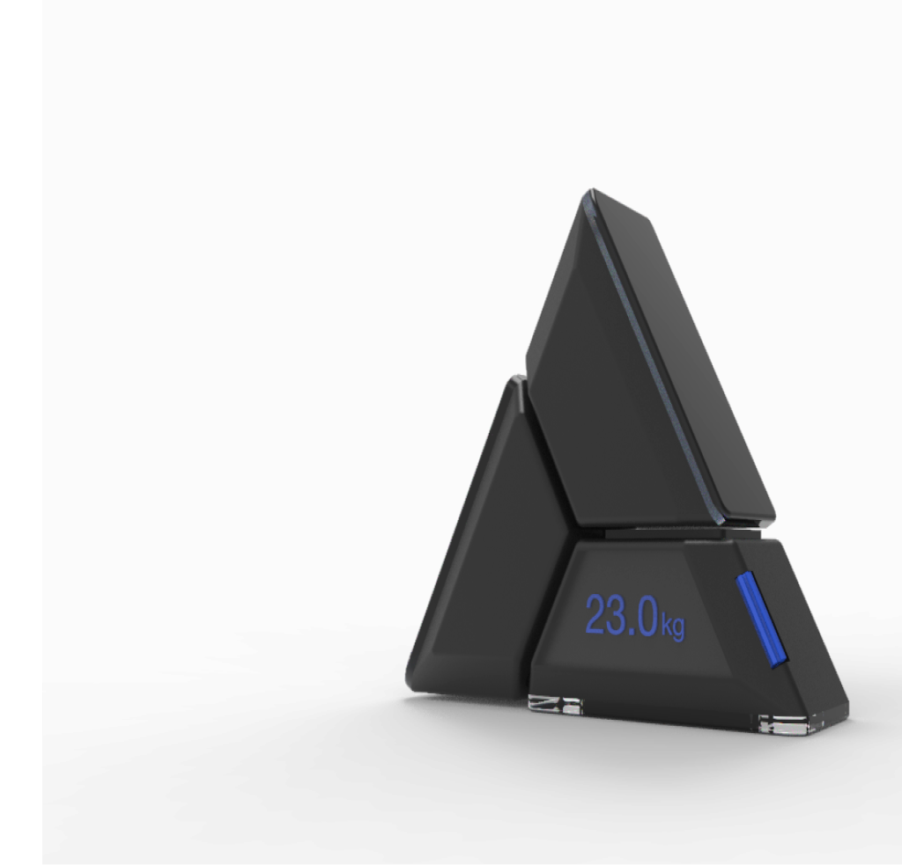
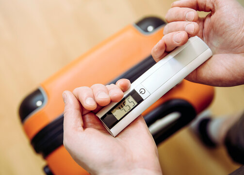
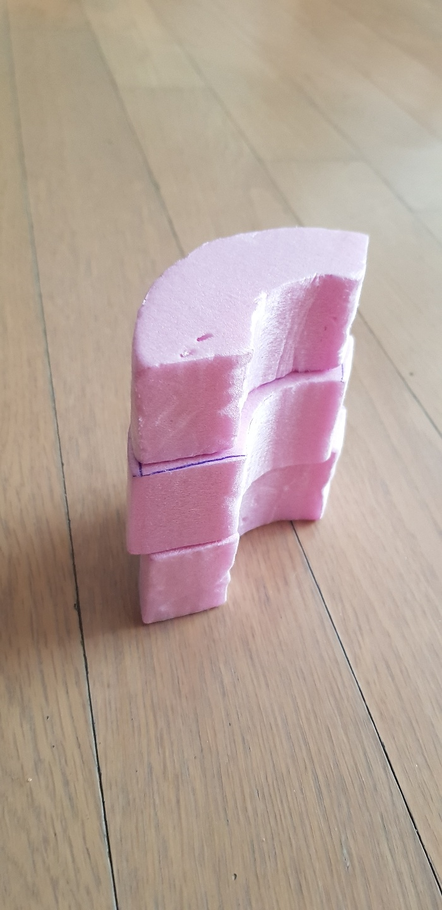
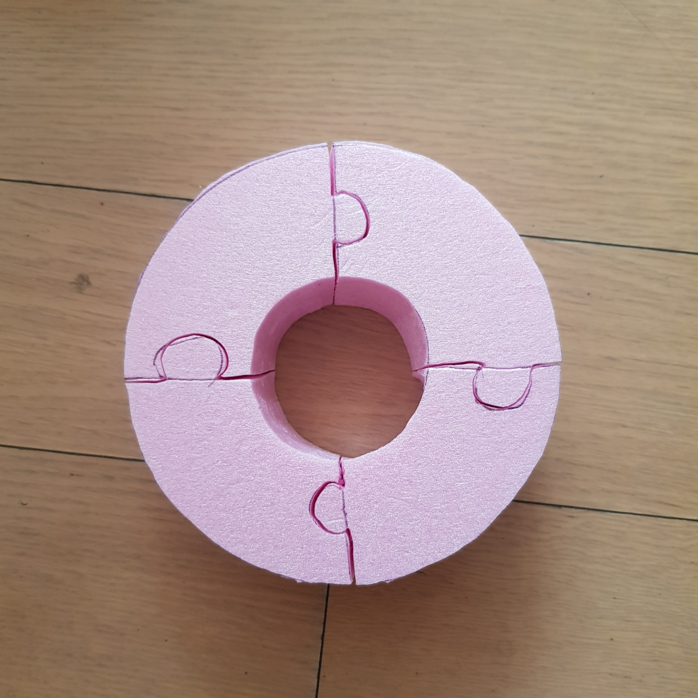

1. Step onto a bathroom scale while holding the suitcase.

When my exchange program in the United States ended, packing for my return to Korea took nearly three hours. I worked up a sweat balancing three suitcases at 28 kg each. The inconvenience of repeatedly adjusting their weight inspired me to design a product that solves this problem.
People used several different methods to keep their luggage within the weight limit, but each method presented its own problems.
1. Step onto a bathroom scale while holding the suitcase.

2. Use a luggage scale at the airport.

3. Weigh it at the check-in counter.

4. Use a portable luggage scale.
A compact form that is easy to store
and measures weight while the user is packing

Research across 20 domestic and international airlines
Dimensions when unfolded






Total dimensions 157.1cm
Weight 23kg
Largest suitcase meeting the standard
Highly portable individual modules
Three modules are placed beneath the suitcase,
using the minimum size required for stability.
When combined, the modules form a triangle
for a highly portable design.
A central gel pad holds the modules together
and can also attach them beneath a suitcase.

A design that prevents errors during use
The modules retract inward when weight is applied.
Checking weight through light, without an external device
A light turns on when the weight limit is exceeded, providing immediate feedback.